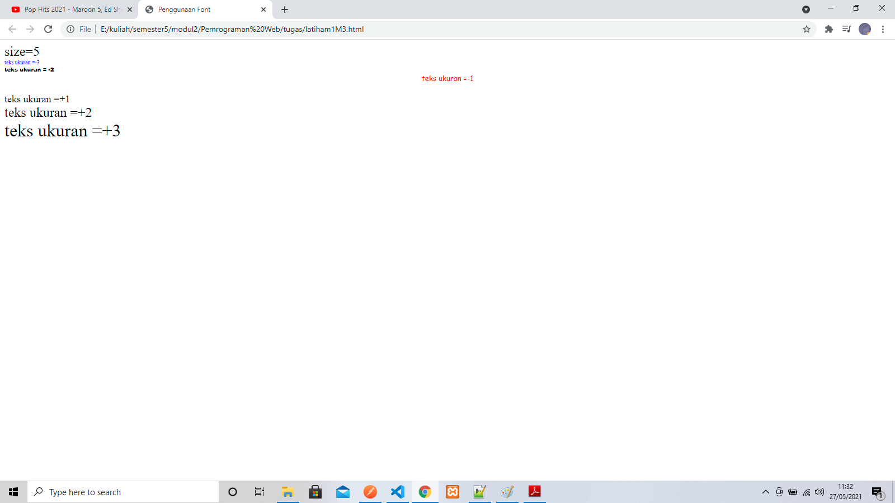
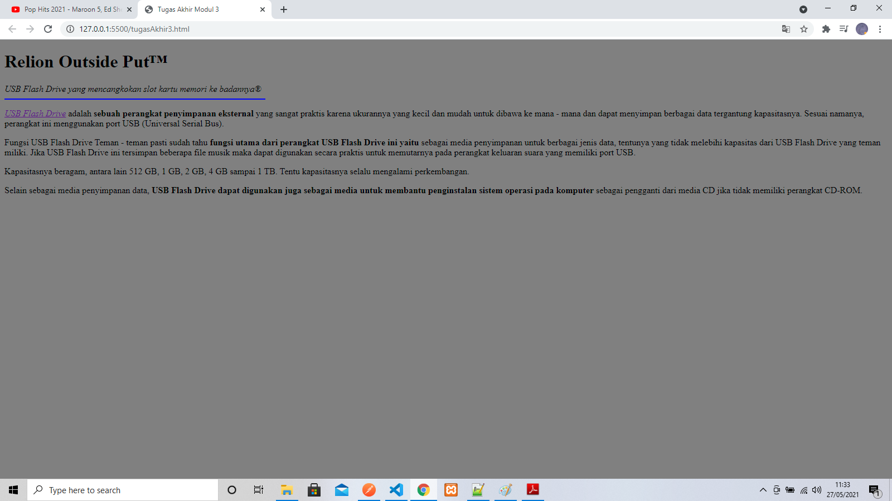

Pertemuan 3
Latihan 1
<xmp> ====================================================== <html> <head> <title>Penggunaan Font</title> </head> <body> <basefont size=3> <font size=5>size=5</font> <br> <font size=-3 color="blue">teks ukuran =-3</font> <br> <font face="arial black" size=-2>teks ukuran = -2</font> <br> <center><font face="comic sans ms" color="red" size=-1>teks ukuran =-1</font></center> <br> <font size=+1>teks ukuran =+1</font> <br><font size=+2>teks ukuran =+2</font> <br><font size=+3>teks ukuran =+3</font> </body> </html> </xmp>
Hasil Dari Script Tersebut

Tugas Akhir
<plaintext> ====================================================== <html lang="en"> <head> <meta charset="UTF-8" /> <meta http-equiv="X-UA-Compatible" content="IE=edge" /> <meta name="viewport" content="width=device-width, initial-scale=1.0" /> <title>Tugas Akhir Modul 3</title> </head> <body bgcolor="gray"> <h1>Relion Outside Put™</h1> <i>USB Flash Drive yang mencangkokan slot kartu memori ke badannya®</i> <hr color="blue" width="466px" align="left" /> <p> <u ><i><a href="">USB Flash Drive</a></i></u > adalah <b>sebuah perangkat penyimpanan eksternal</b> yang sangat praktis karena ukurannya yang kecil dan mudah untuk dibawa ke mana - mana dan dapat menyimpan berbagai data tergantung kapasitasnya. Sesuai namanya, perangkat ini menggunakan port USB (Universal Serial Bus). </p> <p> Fungsi USB Flash Drive Teman - teman pasti sudah tahu <b>fungsi utama dari perangkat USB Flash Drive ini yaitu</b> sebagai media penyimpanan untuk berbagai jenis data, tentunya yang tidak melebihi kapasitas dari USB Flash Drive yang teman miliki. Jika USB Flash Drive ini tersimpan beberapa file musik maka dapat digunakan secara praktis untuk memutarnya pada perangkat keluaran suara yang memiliki port USB. </p> <p>Kapasitasnya beragam, antara lain 512 GB, 1 GB, 2 GB, 4 GB sampai 1 TB. Tentu kapasitasnya selalu mengalami perkembangan.</p> <p> Selain sebagai media penyimpanan data, <strong>USB Flash Drive dapat digunakan juga sebagai media untuk membantu penginstalan sistem operasi pada komputer</strong> sebagai pengganti dari media CD jika tidak memiliki perangkat CD-ROM. </p> </body> </html> </plaintext>
Hasil Dari Script Tersebut

<<<<< Back To Menu